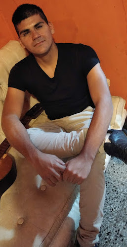

Federico Ivan Maidana
Soy una persona proactiva, responsable, resolutiva, detallista, con amplia
experiencia en el rubro de metalmecánica y soldadura.
- mi experiencia en inicio y fin de proyectos me da la posibilidad de aplicar mis conocimientos
liderando equipos, en lectura de planos,nivelaciones, montaje y puesta en marcha.
- Busco incorporarme a una empresa que valore mi capacidad y entrega a los proyectos que me presenten.
Datos personales:
Estudios Cursados:
- Secundario Completo:
Juan B De Lasalle
- Fundación Latino Americana De Soldadura:
Teórico y practico E1-smaw soldadura filete en chapa
💳 Registro de conducir tipo B1